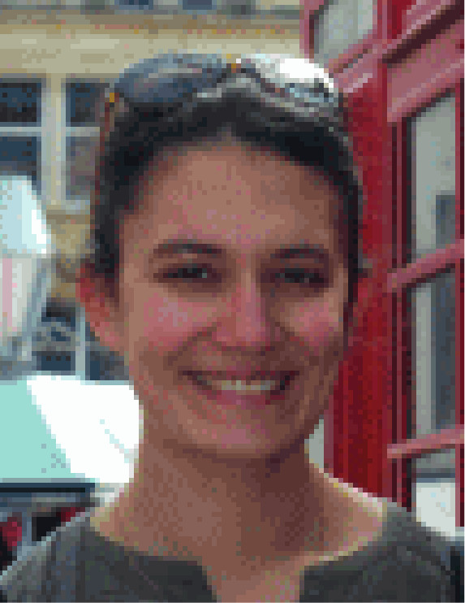

Faculty
| | Blankertz, Benjamin: Institute of Software Engineering and Theoretical Computer Science, Technische Universität Berlin |
|  | Carpentier, Alexandra: Institute for Mathematical Stochastics, Otto-von-Guericke-Universität Magdeburg |
|---|
| Kutyniok, Gitta (Chair): Institute of Mathematics, Technische Universität Berlin |
|---|
| Mehrmann, Volker: Institute of Mathematics, Technische Universität Berlin |
| Müller, Klaus-Robert: Institute of Software Engineering and Theoretical Computer Science, Technische Universität Berlin |
| Müller, Wolf-Christian (Co-Chair): Center for Astronomy and Astrophysics, Technische Universität Berlin |
| Noé, Frank: Department of Mathematics and Computer Science, Freie Universität Berlin |
| Schneider, Reinhold: Institute of Mathematics, Technische Universität Berlin |
| Schütte, Christof: Department of Mathematics and Computer Science, Freie Universität Berlin |
| Sesterhenn, Jörn: Institute of Fluid Mechanics, Technische Universität Berlin |
Additionally Involved Scientists
| | Eisert, Jens: Department of Physics, Freie Universität Berlin |
|---|
 | Reiss, Julius: Institute of Fluid Mechanics, Technische Universität Berlin |
|---|
| | Siebert, Heike: Department of Mathematics and Computer Science, Freie Universität Berlin |
|---|
 | Voigt, Matthias: Institute of Mathematics, Technische Universität Berlin |